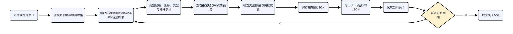
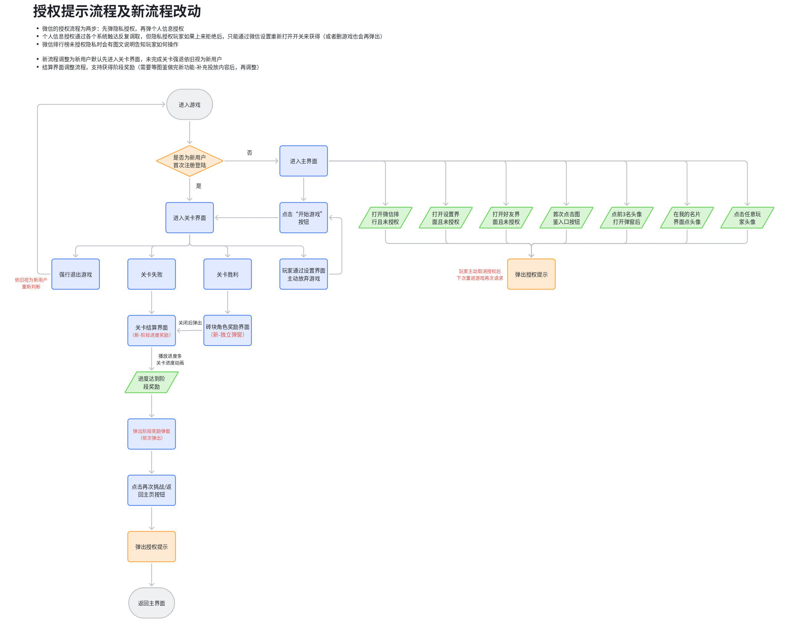

01 / 制作任务档案 · PROJECT 01
羊了个羊：对对碰.
游戏制作人项目团队共 6 人
负责整体方向、玩法与系统、团队排期和数据迭代，把设计决策与研发推进放在同一条工作线上。
任职角色沿用履历记录；具体贡献按项目资料区分，共同职责不逐项归为单个项目的独立成果。
01
统筹方向与玩法系统
- 具体工作
- 负责整体方向、玩法与系统；项目资料将首关上手、第二关挑战、城市包装与阶段范围连接，并补充关卡、编辑器和奖励系统的交付规则。
- 工作价值
- 把产品方向转为具体规则、优先级和验收依据；资料中的历史方案与最终版本分开阅读。
设计与交付案例 ↗02
连接团队协作与研发节奏
- 具体工作
- 在共 6 人的项目团队中承担团队与排期职责，负责项目推进节奏；不包含美术表现和发行运营。
- 工作价值
- 把设计目标与研发协作连接起来，体现制作人对项目整体推进的责任，而非只交付方案。
团队与排期职责 ↗03
连接版本记录与体验迭代
- 具体工作
- 承担数据迭代职责；版本资料区分提测、内部、测试服和全量记录，并关联功能调整与点击拖拽、层级、恢复等缺陷修复。
- 工作价值
- 用交付记录和验收重点支持持续迭代，不把任务归档或埋点接入写成增长业绩。
版本与迭代证据 ↗
职责依据本人履历与确认；原图补充设计证据，经营结果另行说明来源与口径。
 原创职责结构示意 · 非游戏实机画面ROLE / 我的角色
原创职责结构示意 · 非游戏实机画面ROLE / 我的角色游戏制作人
负责整体方向、玩法与系统、团队排期和数据迭代，把设计决策与研发推进放在同一条工作线上。
项目团队共 6 人，不等同于 6 名直接下属。职责不包含美术表现、发行运营。
SCOPE / 工作范围工作职责
- 01整体方向
- 02玩法与系统
- 03团队与排期
- 04数据迭代
RECORD / 可追溯记录项目记录
《羊了个羊：对对碰》列于这段任职经历中。
- 任职公司
- 北京简游科技有限公司
- 角色
- 游戏制作人
- 时间
- 2026.05.18—至今
任职、角色与职责依据本人履历及确认。图示是本站原创的职责结构表达。
以下是项目资料支持的设计与交付案例，不将团队工作认定为个人独立成果。历史方案、待验收能力与版本表内发布记录分别说明，不以设计目标代替实测业绩。
产品方向与核心体验收口
设计问题
怎样在有限研发资源下，确定优先做好的体验，而不是持续扩充功能？
交付与价值
把产品方向落为阶段范围、优先级与验收要求。不同日期的道具方案有变化，保留版本差异，不将早期规则当成当前最终规则。
关键方案
- 以双牌配对消除降低理解成本，用首关上手、第二关挑战和城市搬砖包装组织核心体验。
- 立项资料以核心关卡、主界面、反馈和稳定性作为阶段重点；关卡文档细化点击拖拽、遮挡、道具、复活和结算状态。
来源：《羊了个羊：对对碰》立项策划案、关卡玩法。立项案包含 AI 辅助整理，范围按其对应阶段阅读。
关卡编辑器与策划生产闭环

项目文档原始流程图 · 非实机画面查看原图（可缩放） ↗展开流程图原尺寸
设计问题
怎样让策划可调整关卡，同时避免编辑器和游戏运行结果不一致？
交付与价值
交付编辑流程、数据约束与游戏内一致性验收清单。偶数校验是基础检查，不等于保证可解；文档仍有待验收项，不宣称所有编辑器能力均已完成。
关键方案
- 分离编辑器保存数据和运行时导出数据；明确坐标、层级、遮挡、特殊砖块与数量校验。
- 要求手动摆放不被保存、导出或试玩随机改写；通过可点击预览、类型统计和试玩回到调整环节。
来源：麻将关卡编辑器系统策划需求文档。原图为设计流程，不是工具实机截图。
每日小物：常驻挑战与奖励承接
设计问题
怎样在主玩法之外增加每日目标，同时让挑战进度和奖励消费互不干扰？
交付与价值
把资格、余额、候选池和发奖分别定义为状态，并提供前后端分工、配置与异常验收。通关率属于设计目标，不写成实测结果。
关键方案
- 独立两关挑战通关后获得兑换券，余额跨天累计；挑战完成与主动抽奖是两个独立操作。
- 失败保留对应进度，换批只调整候选池；覆盖跨日、广告未知结果、断网恢复和重复回调，分享重置周期保留待核实状态。
来源：【常驻玩法】每日小物。新版规则与下方早期“小物好运局”图分开阅读。
图鉴与换装：资产、草稿和正式状态
设计问题
收集、试穿、保存和赠送如何共用清晰的资产规则？
交付与价值
连接长期收集目标、UI/UE 操作和资产一致性；资料有多位修订者，不据文档归档认定个人独立完成全部设计。
关键方案
- 区分完整砖块角色与按槽位佩戴的小物，明确库存、重复获得、互斥、收藏及获取方式。
- 试穿和批量收藏先进入草稿；服务端保存成功后才改变正式状态。返回恢复筛选与位置，异常时保留旧方案，并处理赠送去重。
来源：图鉴功能文档。较早立项案记录“未开放”，后续版本记录已包含图鉴功能，不能用单个快照判断全部子功能的上线状态。
新用户上手与微信授权流程

项目文档原始流程图 · 非实机画面查看原图（可缩放） ↗展开流程图原尺寸
设计问题
怎样先让玩家体验玩法，再在需要的入口请求授权，并处理拒绝后的去向？
交付与价值
将授权成功、拒绝、设置引导与原操作恢复落实为入口矩阵和验收场景。图中的阶段奖励有其他系统依赖，不据流程图宣称已经全部接入。
关键方案
- 以首次关卡结算划分新老用户；首次先进入关卡，不在体验前强制申请昵称头像。
- 按隐私、个人信息两步组织入口状态，区分未请求、已拒绝和仅缺个人信息；结算页再次挑战及返回主页不因授权结果被阻断。
来源：游戏登录与微信授权流程。展示的是该版本设计，不作为当前微信平台合规结论。
双节活动：从玩法规则到跨岗位验收
设计问题
怎样把活动玩法、收集结算和兑换做成团队可以分工交付的完整链路？
交付与价值
提供状态规则、异常用例、资源接入与依赖顺序。体现跨职能交付设计，不把团队美术、代码或所有配置归为个人执行。
关键方案
- 三态月饼以碰撞推进状态，仅完全消除计入收集；成功、失败和放弃分别明确结算，存档恢复不重复累计。
- 分开活动开放与结束展示，覆盖余额、限兑与可重复奖励、并发兑换、断网查询和订单去重；将交付拆为美术、关卡配置、前端、后端及联调验收。
来源：【双节活动】好事成双月饼兑换策划开发案。版本表提供活动发布记录，具体方案细节仍需对应版本验收。
版本管理与迭代证据
设计问题
怎样将需求、缺陷和发布范围关联起来，避免“提测”被写成“上线”？
交付与价值
用版本记录支撑交付和问题迭代，结合点击拖拽、资源刷新、层级、前后台恢复等修复案例说明验收重点。发布记录不证明经营增长或本人独立完成全部任务。
关键方案
- 版本表区分内部、测试服和全量渠道，同时记录版本状态、更新内容和任务关联；测试服已发布不等于全量发布。
- 例如 1.0.539 在表中标为已发布、全量，发布日期 2026-09-24，包含双节活动、限定外观和埋点。另有提测被退回及预计发布日期记录，不能一概作为上线证明。
来源：羊了个羊对对碰版本更新记录。上述为用户提供表内记载，未现场核验生产服务器。
完整原件、内部任务编号、成员信息、精确概率与经济配置不公开；流程图保留原始像素，团队美术与程序实现不扩大为个人职责。
PROJECT DESIGN / 项目设计资料
项目设计资料.
三份项目资料，
阅读状态、系统与操作流程。
我的角色是游戏制作人，工作范围包括整体方向、玩法与系统、团队与排期、数据迭代。下列资料用于展开项目设计讨论；美术执行由团队相应岗位承担。
 项目设计资料 · 状态与异常分支
项目设计资料 · 状态与异常分支
01 / STATE / RECOVERY第二关存档恢复
一条恢复路径，需要同时处理成功、放弃和失败。
- 主页先检测有效存档，再决定是否展示继续对局弹窗。
- 恢复读取最近一次成功保存的进度；失败时保留存档，允许重试。
- 放弃需要服务端确认成功后，才作废旧存档。
查看原图（可缩放）↗
在页面内阅读大图＋
大图可横向与纵向滚动。键盘进入图区后可用方向键移动；手机可滑动，或打开原图缩放。
 项目设计资料 · 系统规则脑图
项目设计资料 · 系统规则脑图
02 / SYSTEM / RULES砖块图案搭配
个性化外观的同时，明确哪些规则保持稳定。
- 仅调整普通砖块正面图案，类型、配对、布局与难度规则保持不变。
- 区分主题浏览、整套使用与自定义搭配，并规定方案的生效时机。
- 保存成功后生效；失败保留旧方案。图中 P0、P1 表示设计范围分层。
查看原图（可缩放）↗
在页面内阅读大图＋
大图可横向与纵向滚动。键盘进入图区后可用方向键移动；手机可滑动，或打开原图缩放。
 项目设计资料 · 小物好运局早期流程方案
项目设计资料 · 小物好运局早期流程方案
03 / PLAYER / FLOW小物好运局流程
早期方案保留作迭代对照；新版每日小物采用通关得券、主动抽奖。
- 原图记录从入口、奖池到活动关卡的早期操作路径。
- 图中胜利后自动揭晓属于早期方案；新版返回页面不自动抽奖，兑换券可以跨天累计。
- 失败路径与成功路径分开阅读，具体进度与资格以新版每日小物规则为准。
查看原图（可缩放）↗
在页面内阅读大图＋
大图可横向与纵向滚动。键盘进入图区后可用方向键移动；手机可滑动，或打开原图缩放。
资料类型：项目设计图。图中展示设计方案，不代表全部已上线，也不构成经营成果证明；资料不用于认定个人独立完成范围。
PROJECT NOTES / 公开职责摘要
我的工作范围.
围绕已确认的职责整理。
每篇都有图示与独立阅读页面。
 原创职责图示 · 非游戏实机画面
原创职责图示 · 非游戏实机画面
01 / DIRECTION / SYSTEMS玩法与系统
负责整体方向、玩法与系统。把制作人的工作位置和设计关注点放在一起阅读。
阅读公开摘要 ↗
 原创职责图示 · 非游戏实机画面
原创职责图示 · 非游戏实机画面
02 / TEAM / SCHEDULE团队与排期
项目团队共 6 人，工作范围包含团队与排期。团队背景与个人职责分开说明。
阅读公开摘要 ↗
 原创职责图示 · 非游戏实机画面
原创职责图示 · 非游戏实机画面
03 / DATA / ITERATION数据迭代
数据迭代属于已确认的工作范围。阅读时区分职责记录与可核验的结果。
阅读公开摘要 ↗